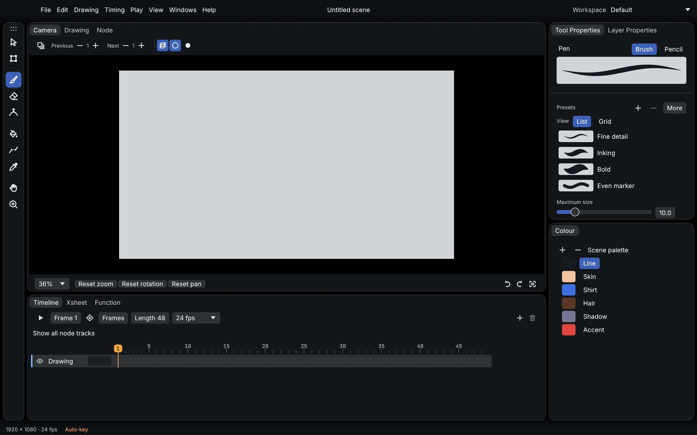

Symphony
Free, open-source 2D animation software.
Get the preview build
Key features
- Make room for in-betweens
- Insert frames after the playhead. Current exposures hold through the gap, and later exposures and peg keys shift together.
- Turn a drawing into an editable matte
- Switch a drawing to a mask and back while keeping its artwork, exposures, and node connections.
- Bring your brush packs
- Use sampled Photoshop tips in vector strokes and import packs from Krita, Procreate, and MyPaint.
- Find actions with Search
- Press Tab and type what you want to do. Search prioritizes the panel you’re working in and can add nodes or run commands.